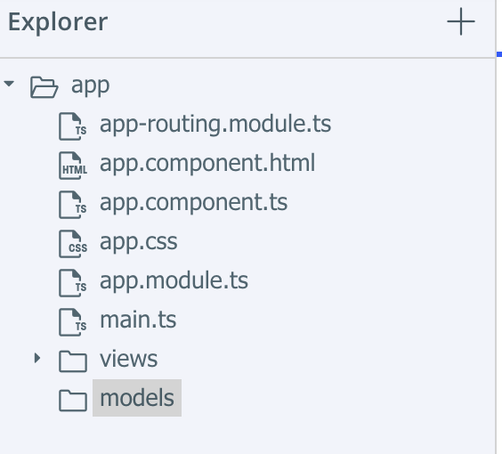
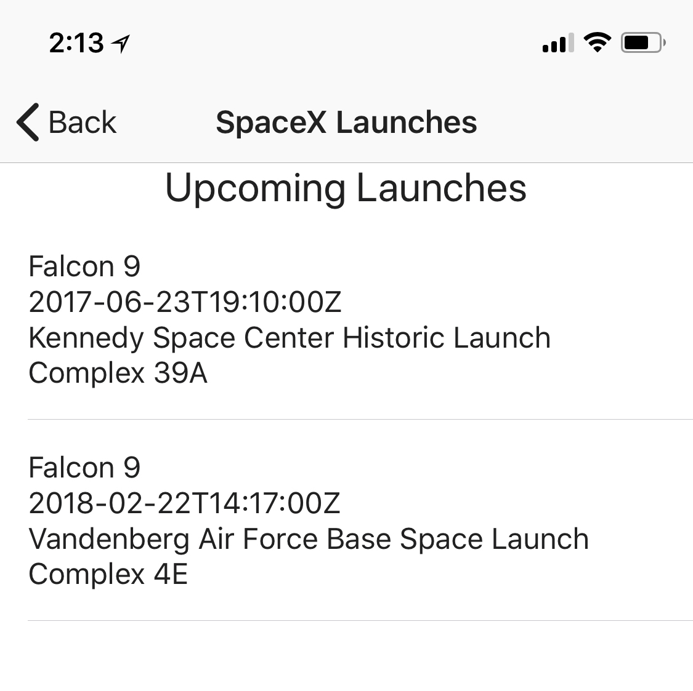
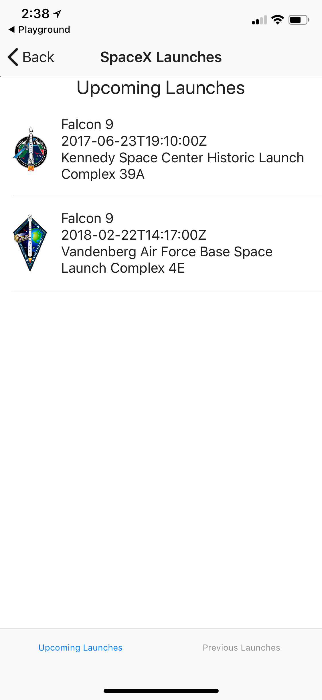
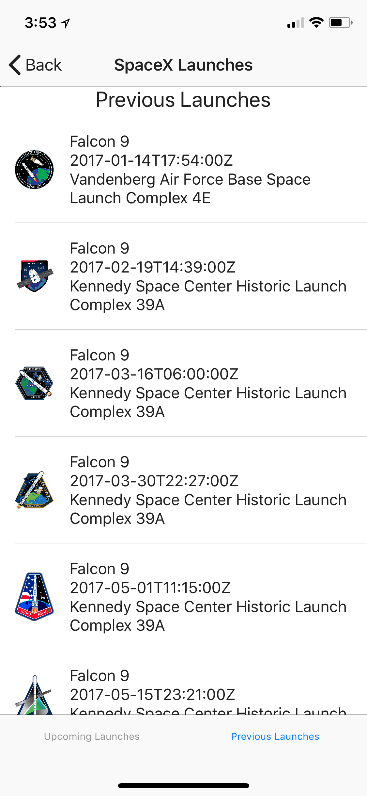

Introduction
Welcome to the NativeScript Workshop!
To get started you'll need the following pre-requisites:
- Windows, Mac, or Linux computer
- Web browser and access to https://play.nativescript.org
- Android or iOS mobile device with WiFi or Cellular connection
About NativeScript
NativeScript is a framework for building native iOS and Android apps using JavaScript and CSS. NativeScript renders UIs with the native platform’s rendering engine, no WebViews, resulting in native-like performance and UX.
NativeScript provides a best-of-both-worlds development experience. Our cross-platform JavaScript modules give you the convenience of writing iOS and Android apps from a single JavaScript code base, while our runtimes give you the power of accessing native APIs, SDKs, and frameworks when you need them—all without needing to open Xcode or Android Studio. NativeScript was created and is supported by Telerik.
To learn more about how NativeScript works, check out this quick 3-minute video.
About the NativeScript Playground
The NativeScript Playground is a browser-based environment for developing simple NativeScript apps. It’s a great place to get started learning NativeScript, as you can develop apps without needing to install the various SDKs and tools needed for native iOS and Android development. All you need is your browser, and an Android or iOS mobile device connected to the internet to get started.
In this workshop, we'll be using the NativeScript Playground to quickly prototype an app. It's a powerful tool, and we believe you'll like this approach because you don't need to install anything on your computer to get started.
What you're building
In this workshop you'll learn how to build iOS and Android mobile apps using NativeScript. Throughout the workshop, you'll be building a SpaceX Launch Information app that uses the SpaceX launch API. The app will list past and future SpaceX launches, and allow you to learn more about each launch.

Key concepts and take aways:
- NativeScript app architecture
- Using Angular to build a NativeScript app
- How to quickly prototype an app using the NativeScript Playground
- Pages
- Navigation
- Basic UI elements (labels, buttons, text boxes, etc.)
- Organizing your UI with layouts
- Styling your app with CSS
- Data binding
- Obtaining data from remote APIs
Materials
You can find additional workshop materials and presentation content at the locations below:
- Presentation: https://github.com/mikebranstein/nativescript-workshop-mcc/blob/master/nativescript-workshop.pptx
- Source code for this app: https://github.com/mikebranstein/nativescript-spacex-workshop
- Source code for these instructions: https://github.com/mikebranstein/nativescript-spacex-workshop-instructions
Where to learn more
The first place you can go to learn more about NativeScript is by reading our book, The NativeScript Book, available FREE from Telerik.
There is also a huge community around NativeScript, we've compiled a brief list of additoinal resources below.
- Official NativeScript website: https://nativescript.org
- NativeScript Playground: https://play.nativescript.org
- NativeScript Snacks (short videos and tutorials to help you get started fast): http://www.nativescriptsnacks.com
- NativeScript Sidekick (get started fast on your computer): https://www.nativescript.org/nativescript-sidekick
- NativeScript Discourse Forum: https://discourse.nativescript.org/
- Official Resources List: https://www.nativescript.org/resources
- GitHub Repository: https://github.com/NativeScript/NativeScript
- Upcoming Events: https://www.nativescript.org/events
- Newsletter: https://www.nativescript.org/nativescript-newsletter
- For Your CTO: https://www.nativescript.org/ctos-guide
Inspirations
A portion of this workshop was inspired by a fun weekend project Mike built with his son. We're really into building robots right now, so we built a carboard robot with his tablet as the head. I ended up writing a quick NativeScript soundboard app so the robot could talk back to him.
Download our Book!
We promise - this is the last plug. We wrote a book about NativeScript. And you can download it. For free. Yes, free. Free, like beer.
Getting Started with the NativeScript Playground
In this chapter, you'll learn how to use the NativeScript Playground to get started quickly, build your first app, and run the app on your phone.
About the NativeScript Playground
The NativeScript Playground is a browser-based environment for developing simple NativeScript apps. It’s a great place to get started learning NativeScript, as you can develop apps without needing to install the various SDKs and tools needed for native iOS and Android development. All you need is your browser, and an Android or iOS mobile device connected to the internet to get started.
Getting Started and Your First App
Now that you know about the NativeScript Playground, let's get started.
Exercise: Explore the Playground and Run an App
In this exercise, you'll explore the NativeScript Playground and learn how to run an app built in the Playground on your mobile device.
Prerequisites
Before we get started, you'll need to install 2 apps on your mobile device:
In your your respective App Store (Google Play or Apple App Store), locate both apps and install them on your mobile device. If you're haivng troubel finding the app, use the links above.
Explore the NativeScript Playground
Next, navigate to the NativeScript Playground in your browser.
Click "Play now" to begin.

After clicking "Play now" a QR code will appear, and you'll be notified that your Playground is ready:

Open the NativeScript Playground app on your mobile device, and select the "Scan QR code" action.

Using the QR code scanner in the NativeScript Playground app, scan the QR code displayed on the NativeScript Playground website.
NOTE
Do not scan the QR code on this page. Scan the QR code in the Playground.
After scanning the QR code, the NativeScript Playground app will open the NativeScript Preview app and dynamically load the code from the Playground Website and launch a native mobile app on your mobile device!
When all of this happens, you should see this on your mobile device:
...and you should also see the following on the Playground website:

Congratulations! You just used the Playground to write your first mobile app with Angular. Then, you ran the app on your phone. That was fast - and you didn't need to install anything on your computer!
OK, we know you didn't have to do much of anything to write this app, but we promose you'll learn more and build something more advanced during the workshop.
Before we move on, let's take a minute to understand what happened and explore the NativeScript Playground UI.
How the NativeScript Playground Works
The NativeScript Playground is a web-based IDE. You write your Angular code in the browser, then save it. When you scan the QR code, the NativeScript Playground app coordinates with the NativeScript Preview app and reaches out to the Playground website. The code is pulled down, loaded into the NativeScript runtime in the Preview app, and renders native iOS/Android UI on your mobile device.
Exploring the Playground UI
Now that you've learned how the Playground works, let's explore the UI.
As you'll notice, the Playground UI is similar to a basic IDE, like Visual Studio Code, Visual Studio, Eclipse, or Web Storm.
On the left is a file explorer, where you can add or update files and folders to your mobile app:

The large central area is a file editor with Intellisense:
The bottom central area shows you which mobile devices are connected to the Playground and device/error logs for debugging purposes.

Connected Devices
Hold on...the Playground shows you connected devices. Yes, that's right. When your mobile device connects to the Playground, it registers itself with the website. You can see a variety of information about a connected device.
Pretty cool, right? Well, there's somethign even cooler about the Playground: LiveSync.
LiveSync
LiveSync is a technology that syncs changes made in the Playground down to your mobile device in real time. This means that you can quickly make changes to your app in the Playground and the changes will be instantly pushed to connected devices. If you've ever done mobile development before, you'll understand how useful this is - getting feedback from your code running on real mobile devices usually takes time, but with LiveSync, it's instantaneous.
LiveSync in Action
Now that you've learned about LiveSync, let's see it in action.
Exercise: Using LiveSync
In this exercise, you'll learn how to use LiveSync by interacting wth the Playground website and seeing the app on your mobile device update automatically.
Getting Started
Before we get started with this exercise, be sure to have your Playground app loaded in the NativeScript Preview app.
If your app isn't running, press the "QR code" button in the Playground website, and re-scan the code on your mobile device:

Understanding Markup
Now that your app is running on your mobile device, let's make a change.
Start by finding the home.component.html file on the left, then open it for editing by clicking on it:

You'll notice some markup in the home.component.html file. It's not important for you to understand the markup right now, but you should know that any markup you place in this file will affect the native UI generated on the home page of your app.
Even though you may not understand all of the markup, you can probably guess at the meaning on most tags. NativeScript UI markup is can be easy to understand, because it's similar to HTML.
For example, look at the markup that displays a label on the screen that contains the text "Play with NativeScript!":
<Label
textWrap="true"
text="Play with NativeScript!"
class="h2 description-label">
</Label>
Changing markup with LiveSync
Let's change the text in the home.component.html file.
Change the text that reads "Play with NativeScript!" to somethings else. feel free to use the code snippet below, or your own text.
<Label
textWrap="true"
text="Using LiveSync is easy and convenient!"
class="h2 description-label">
</Label>
After making this change, press the "Save" button:

Then, look back at your mobile device, and watch the UI of the app change:
Easy and cool!
We'll continue to rely on LiveSync throughout this workshop to get instant feedback in our apps.
Let's continue on and get our Playground app started.
Cleaning up the template
In the final portion of chapter 1, you'll be cleaning up the default Angular template in the Playground to get it ready for the SpaceX app. Let's jump in!
Exercise: Clean up the default Playground template
In this exercise, you'll reorganize files and folders in the Playground website to get ready for the SpaceX app.
Why?
You may be wondering why we're cleaning up the default Playground template. The default Playground template works well, but doesn't structure app pages into a "views" folder (which is a preference of ours).
Remove the home folder
Let's get started by removing the home folder. Find it in the Explorer, select it, click the "...", and select the "Delete" option:

Confirm the delete:
Add a folder named "views" to the "app" folder:
Add a new home folder and component
Now, create a "home" folder inside of the "views" folder:
Then add the "home" component by selecting the "..." next to the "home" folder and select "add component". Name the component "home":

By using the "add component" option, the Playground will scaffold a CSS, TypeScript, and HTML file for you automatically:
Add the home component to the app module
Next, let's add the home component to the app module. Open the app.module.ts file, and add a reference to the home component.
You can add the home component manually or copy/paste the code below.
import { NgModule, NgModuleFactoryLoader, NO_ERRORS_SCHEMA } from "@angular/core";
import { NativeScriptModule } from "nativescript-angular/nativescript.module";
import { AppRoutingModule } from "./app-routing.module";
import { AppComponent } from "./app.component";
import { HomeComponent } from "./views/home/home.component";
@NgModule({
bootstrap: [
AppComponent
],
imports: [
NativeScriptModule,
AppRoutingModule
],
declarations: [
AppComponent,
HomeComponent
],
schemas: [
NO_ERRORS_SCHEMA
]
})
export class AppModule { }
Route to the new home component
Lastly, update the app-routing.module.ts file to reflect the changes in the home component:
import { NgModule } from "@angular/core";
import { Routes } from "@angular/router";
import { NativeScriptRouterModule } from "nativescript-angular/router";
import { HomeComponent } from "./views/home/home.component";
const routes: Routes = [
{ path: "", component: HomeComponent },
{ path: "home", component: HomeComponent }
];
@NgModule({
imports: [NativeScriptRouterModule.forRoot(routes)],
exports: [NativeScriptRouterModule]
})
export class AppRoutingModule { }
You're finished. You replaced the default home component with a new home component located in the views folder.
Save your Playground project online and let LiveSync do it's work. If your app got disconnected from LiveSync, just re-scan your QR code to load it up.
When you launch your app, you should see a blank page with Home at the top:
That concludes chapter 1. In the next chapter, you'll pick up from here, build out the home page, and learn about the various NativeScript UI components.
The Home View
Now that you understand the basics of NativeScript and how the Playground you're ready to start creating your first (or maybe not your first) NativeScript app. Over the course of this chapter and the next few chapters you will be creating an app the reads and displays SpaceX flight data.
In this chapter will focus on designing the home page and learn to use the following NativeScript elements:
<Button><StackLayout><ScrollView>
Layouts
Before we go too much further, I need to introduce you to something called a layout. Layouts are UI elements (similar to the <Label /> element) that allow you to organize the UI of each page.
If you look at the home-component that you scaffolded in the previous chapter, you will see there is already code added to the home-component.html for you.
<ActionBar title="Home" class="action-bar">
</ActionBar>
<ScrollView class="page">
<StackLayout class="home-panel">
<!--Add your page content here-->
</StackLayout>
</ScrollView>
The ScrollView and StackLayout elements are two basic layout elements (we'll talk about the ActionBar in a later chapter). To display multiple elements on a page, you need to use a layout like the ScrollView or StackLayout and in most cases you will want to use both. The ScrollView functions exactly as you would expect, it makes the content inside of it scrollable. The StackLayout element organizes child elements vertically or horizonatally.
The
StackLayoutorganizes child elements stacked on top of each other vertically by default.
Now that we've talked about basic layouts, let's start designing the home view.
Designing the home view
Exercise: Using the StackLayout to organize UI elements in a "stack"
First thing is first, go ahead and remove the ActionBar element from home-component.html because you will not need this on the home view. After deleting the ActionBar your app should have a blank home view inside the NativeScript preview app.

Next, let's create a class to style the home view called base to create a nice background image for our view. Add the base class to the home-component.css file (you can remove the existing home-panel class because you will not be using that).
.base {
background-image: url("https://raw.githubusercontent.com/mikebranstein/nativescript-spacex-workshop/master/app/views/home/spacex_home.png");
background-repeat: no-repeat;
background-size: contain;
background-color: black;
background-position: center;
}
Update the home-component.html to utilize your new base class.
<ScrollView class="base">
<StackLayout>
</StackLayout>
</ScrollView>
You app should now have a SpaceX background image in the preview app.

The last step in creating your home view is to add a button. Add a <Button> element inside of the <StackLayout> in the home-component.html file.
<ScrollView class="base">
<StackLayout>
<Button text="View Launches" class="btn btn-primary"></Button>
</StackLayout>
</ScrollView>

What are those CSS class names?
You may have noticed that you added the
btnandbtn-primaryclasses to the<Button>that you created and that the button styled blue. Thebtnandbtn-primaryclasses are part of the NativeScript Themes that NativeScript provides to you out of the box to help style your app.
You're almost done with the home view. To make the home view look more complete we should move the button we added to the bottom of view so that it looks more polished. To complete the view, update the home-component.html to set the vertical alignment property of the <StackLayout>.
<ScrollView class="base">
<StackLayout verticalAlignment="bottom">
<Button text="View Launches" class="btn btn-primary"></Button>
</StackLayout>
</ScrollView>
Next add a margin to the <Button> element by updating the home-component.css file.
button {
margin-bottom: 100;
}
You should now be able to view the completed home view in the NativeScript preview app. In the next chapter you will work on implementing an event handler when the view launches button is tapped.

Pages and Navigation
In this chapter, you'll be creating a page to view recent and upcoming SpaceX launches, then you'll learn how to navigate to and from it. You'll also learn about these NativeScript elements:
*ActionBar
Creating the List page
In the last chapter, you refined the Home page of your app, and finished by adding a button labeled View Launches. In this section, you'll put that button to use.
But, before we can start using it, we'll need to create a page to navigate to. Let's start by adding the List page.
Exercise: Adding the List page
In this exercise, you'll be adding the List page.
In a previous chapter you learned how to add a page (or component) via the Playground. You'll recall it's straight-forward and can be done by clicking the 3 dots next to a folder and selecting the "Add component" option.
If you're comfortable doing this on your own, feel free to proceed by creating a folder underneath views named "list", then adding the List component. Your Playground should like this when you've finished:
Don't forget!
After adding the List component folder and files, you need to register it in the
app.module.tsfile.
If you can get this far on your own, skip to the end of this exercise. If not, it's ok. Let's review how to add a component.
Adding a page in the Playground
The first step to creating a new page (or component) is to create a folder for the page. As you've learned earlier, Angular components should be placed inside a folder.
Start by adding a folder named "list" to the "views" folder. Click the 3 dots next to the "views" folder:
Select "Add folder" and name the folder "list":
Then, create the "list" component by clicking the 3 dots next to the "list" folder, selecting "Add component":
After adding the list component, you should see:
Finally, open the app.module.ts file and add the List component to the app module.
import { NgModule, NgModuleFactoryLoader, NO_ERRORS_SCHEMA } from "@angular/core";
import { NativeScriptModule } from "nativescript-angular/nativescript.module";
import { AppRoutingModule } from "./app-routing.module";
import { AppComponent } from "./app.component";
import { HomeComponent } from "./views/home/home.component";
import { ListComponent } from "./views/list/list.component";
@NgModule({
bootstrap: [
AppComponent
],
imports: [
NativeScriptModule,
AppRoutingModule
],
declarations: [
AppComponent,
HomeComponent,
ListComponent
],
schemas: [
NO_ERRORS_SCHEMA
]
})
export class AppModule { }
This concludes the exercise.
Navigating to the List page
Now that you've created the List page, let's go back the button on the Home page and add navigation.
Exercise: Navigating to the List page
In this exercise, you'll be modifying the Home component's home.component.html and home.component.ts files to add navigation to the List page.
Adding a tap event handler to a button
Let's start by opening the Home component's markup file (home.component.html).
In the last chapter, you added a button labeled "View Launches":
<Button
text="View Launches"
class="btn btn-primary">
</Button>
Add a tap event handler attribute to the button's markup. Don't worry if you don't understand what's going on right now, we'll explain it in a moment:
<Button
text="View Launches"
class="btn btn-primary"
(tap)="onViewLaunchesTap()">
</Button>
What did I just do?
First, you need to know that every UI element in NativeScript has a variety of events. We don't have enough time to detail each event, and many of the events are intuitive. For example, buttons have "tap" events. In Angular, you can bind (or attach) a function to an event. By adding
(tap)="onViewLaunchesTap()"to the button element, you told your app to run theonViewLaunchesTap()function when the button is tapped.
Angular: Where to learn more
Ok, we'll admit it - if you've used Angualr before, you'll know there's a lot more to the binding syntax we just covered. Unfortunately, in a short workshop, we don't have time to cover it in greater detail. If you'd liek to learn more, check out the Angular documentation.
NativeScript: Where to learn more
If you'd like to learn more about the events available to various UI elements, check out the NativeScript documentation.
Let's get back to navigation...
Adding the tap event handler code
Now that you've added the markup to bind the "View Launches" button to the onViewLaunchesTap(), let's add that function.
Open the home.component.ts file and replace the Home component code with the code below.
Note
We know there's a lot of new code here, and we'll walk you through it in just a moment.
import { Component, OnInit } from "@angular/core";
import { RouterExtensions } from "nativescript-angular/router";
@Component({
selector: "home",
moduleId: module.id,
templateUrl: "./home.component.html",
styleUrls: ['./home.component.css']
})
export class HomeComponent implements OnInit {
constructor(
private routerExtensions: RouterExtensions,
private page: Page) {
}
ngOnInit(): void {
}
onViewLaunchesTap(): void {
this.routerExtensions.navigate(["list"]);
}
}
In this updated code, you'll notice 3 major changes:
- At the top:
import { RouterExtensions } from "nativescript-angular/router"; - In the constructor:
private routerExtensions: RouterExtensions - The
onViewLaunchesTap()function
Let's walk through each of these one by one.
Importing RouterExtensions
At the top of the Home component code, you imported an additional class named RouterExtensions from nativescript-angular/router. This class is a NativeScript-specific class for interacting with Angular's rounting/navigation system. There's not much more to learn about it, so just remember that you need to import it on every page that you'll need to use navigation.
And here's an extra secret...we've found that you'll need this in about every component you create.
Including RouterExtensions in the constructor
The second addition to the Home component is passing an instance of the RouterExtensions class into the constructor:
constructor(
private routerExtensions: RouterExtensions) {
}
By adding this to the Home component's constructor, you have access to an instance of the RouterExtensions class from within the Home component class.
But, how does this work?
You may be interested into how the Home component actually gets an instance of the RouterExtensions class. Angular's dependency injection does this heavy lifting. If you're not familiar with dependency injection, we recommend you read up on Angular's site.
The onViewLaunchesTap() function
The final change to the Home component is the addition of the onViewLaunchesTap() function:
onViewLaunchesTap(): void {
this.routerExtensions.navigate(["list"]);
}
As you'll recall, we imported the RouterExtensions class at the top of the file and injected an instance of RouterExtensions into the Home component. This allows us to access it via this.routerExtensions.
The RouterExtensions class has a function named navigate(), which takes an array of strings as a parameter. The first value in that array is the name of a registered route in our application.
Registered routes?
A registered route is a key-value pair, where the key is a string (like "list") and the value is a component (like the List component we just created). You may have noticed we haven't "registered" the "list" route yet, but we'll do that next.
Now that you know how the navigate() function works, you can see that when the "View Launches" button is tapped, the onViewLaunchesTap() function navigates to the registered route named "list".
Registering the "list" route
To close out our journey to navigate between pages / components, we need to register the "list" route and point it to our List component.
Open the app-routing.module.ts file, import the List component, and add an entry to the Routes array:
import { NgModule } from "@angular/core";
import { NativeScriptRouterModule } from "nativescript-angular/router";
import { Routes } from "@angular/router";
import { HomeComponent } from "./views/home/home.component";
import { ListComponent } from "./views/list/list.component";
const routes: Routes = [
{ path: "", component: HomeComponent },
{ path: "home", component: HomeComponent },
{ path: "list", component: ListComponent },
];
@NgModule({
imports: [NativeScriptRouterModule.forRoot(routes)],
exports: [NativeScriptRouterModule]
})
export class AppRoutingModule { }
Testing it out
Now that we've finished adding navigation, reload the app on your mobile device. When you tap the "View Launches" button, you should navigate to the List page/component:
This concludes the exercise.
Nice work! You've just learned how to add navigation to your app. As a quick reminder, there are a few steps to take:
- Add a folder for the new page/component
- Add the new component
- Register the new component in the app module (
app.module.tsfile) - Bind a button's tap event to a function with
(tap)="onTapFunction()" - Import
RouterExtensionsinto the originating component's class code - Using Angular's dependency injection, inject a
RouterExtensionsinstance into the originating component's constructor - Add the tap event handler function to the originating component's class code
- Register the new component as a route in
app-routing.module.tsfile
Yeah, we know, it's a lot of code jsut to navigate, but that's the Angular way ;-)
Adding an Action Bar
In the final part of this chapter, you'll learn how to use NativeScript's Action Bar.
Action Bar
The Action Bar is a UI element that controls the upper area of the screen, allowing you to create (or customize) a "header" of the page.
Here's the area of the page we're going to modify:
Action Bars are a versatile UI element in NativeScript, and you can use them to customize your app in various ways, including: navigation to the previous page, header icons, and page title/headings. We're not going to dive into the intimate details of Action Bars, so if you're interested in learning more, check out the official documentation.
Now that you know a little bit about the action Now that you can navigate to the List page, let's dive in and customize its Action Bar.
Exercise: Customizing an Action Bar
In this exercise, you'll be modifying the List component's Action Bar (ever so slightly) to change the header text of the List page.
Reviewing the Action Bar markup
Earlier in this chapter, you created the List component, and left the UI markup alone. Open the list.component.html file again and review it's contents. It should look similar to:
<ActionBar title="List" class="action-bar">
</ActionBar>
<ScrollView class="page">
<StackLayout class="home-panel">
<!--Add your page content here-->
</StackLayout>
</ScrollView>
As shown in the markup above, an Action Bar can be customized by adding a title attribute. The title attribute is straight-forward and sets the title of the page. The action-bar class name helps to style it to match your overall app theme's and applies default styles using the NativeScript Theme plugin.
Theme Details
For more information about styling the Action Bar with the Theme plugin, check out the official documentation.
As for the markup following the Action Bar, ignore it. You'll be replacing it later.
Update the Action Bar
Let's make a simple modificaiton to the Action Bar and update the title.
Change the title to "SpaceX Launches" or something equally appropriate:
<ActionBar title="SpaceX Launches" class="action-bar">
</ActionBar>
Refresh the app on your mobile device and you shoudl see something similar on the List page:
NOTE
This was a simple example on using an Action Bar. If you're in for a challenge, try adding an icon to the Action Bar, customizing the background color, or changing the back button icon. There are a ton of online resources for customizing the Action Bar in NativeScript. Let me Google that for you.
This concludes the exercise.
This concludes the chapter.
Displaying Data
Now that you know how to navigate between different views, you can work on making the list component more complex by displaying data. In this chapter you will learn about two new NativeScript elements:
ListViewTabView
Creating a list view
Exercise: Creating a list view
As you already know, the NativeScript playground provides numerous components you can drag and drop into your project. Go ahead and find the ListView component in the list of components and drag it inside the stack layout.
And you're done! you created a list view! Just kidding, but the playground does make it easy to get started learning NativeScript components. Go ahead and save your project and take a look at your app in preview.
You may have noticed that there is data showing up. That's because when you drag a component in the playground it scaffolds out a lot of code for you. Take a look at list.component.ts and you will see the code that is generating the data in the ListView that you drag-and-dropped.
Before we replace this code, let's just back over the the view code and update it a bit. Replace the current ScrollView and StackLayout with a single StackLayout containing a Label and ListView.
<StackLayout class="page">
<Label class="h2 text-center" text="Upcoming Launches"></Label>
<ListView [items]="launches" class="list-group">
<ng-template let-item="item">
<GridLayout rows="*, *, *" columns="auto, *" class="list-group-item">
<Image row="0" col="0" rowSpan="3" [src]="item.links.mission_patch" class="img-circle"></Image>
<Label row="0" col="1" [text]="item.rocket.rocket_name"></Label>
<Label row="1" col="1" [text]="item.launch_date_utc"></Label>
<Label row="2" col="1" textWrap="true" [text]="item.launch_site.site_name_long"></Label>
</GridLayout>
</ng-template>
</ListView>
</StackLayout>
Let's talk about the ListView in more depth. We're using the Angular syntax to bind the items in the ListView to a collection of elements called launches:
<ListView [items]="launches" class="list-group">
When using the ListView component we typically define a template.
<ng-template let-item="item">
<GridLayout rows="*, *, *" columns="auto, *" class="list-group-item">
<Image row="0" col="0" rowSpan="3" [src]="item.links.mission_patch" class="img-circle"></Image>
<Label row="0" col="1" [text]="item.rocket.rocket_name"></Label>
<Label row="1" col="1" [text]="item.launch_date_utc"></Label>
<Label row="2" col="1" textWrap="true" [text]="item.launch_site.site_name_long"></Label>
</GridLayout>
</ng-template>
Let's take a moment to review the ListView template that we just created. You added a new layout type called GridLayout. The GridLayout allows you to place each elemented nested underneath into a particular row or column. Each row and column is defined in a comma separated list the the rows and columns properties. Rows and columns can be sized in the following three ways:
- (fixed number) - A fixed width in pixels
- (*) - The row or columns will take up all the remaining space left over after the other rows/columns are sized
- (auto) - The row or column will grow or shrink to the size of the child elements
In or grid example we use * for the rows to make each row the same size. Then our first column is auto-sized based on the image in with the second column taking up the remaining space.
The rest of the components in our GridLayout, the Image and Label, should be familiar to you because we used them earlier. However, take not that we are binding these to properties of item. The let-item syntax of Angular defines the item variable that is used to bind to and render each template for the list of launches that we are binding to (similar to how a for loop works).
This concludes the exercise.
Binding to data from a service
Now that you have the view updated we need to produce the list of launches that our UI is binding to. In order to bind data to our UI we will first need to create some models and return them from a service. Let's get started.
Exercise: Binding to data from a service
The first order of business is to generate some models so you can bind your data to strongly typed objects. First create a new folder underneath the app folder called models.

Next, create 4 TypeScript interfaces inside of the models folder.
rocket.ts
Specific data on the rocket that was launched.
export interface Rocket {
rocket_id: string;
rocket_name: string;
}
links.ts
Metadata about the rocket launch.
export interface Links {
mission_patch: string;
article_link: string;
video_link: string;
}
launchSite.ts
Location data about where the rocket was launched from.
export interface LaunchSite {
site_id: string;
site_name: string;
site_name_long: string;
}
launch.ts
Full launch data.
import { Rocket } from "./rocket";
import { LaunchSite } from "./launchSite";
import { Links } from "./links";
export interface Launch {
flight_number: number;
launch_year: string;
launch_date_utc: string;
launch_success: boolean
details: string;
rocket: Rocket;
launch_site: LaunchSite;
links: Links;
}
Now that you have created the models to hold the SpaceX launch data, you need to create a service to return it. In this chapter we will be creating a service that returns some hard-coded data. In the next chapter we will pull the data from the SpaceX public api. Start by adding another folder to help keep your code organized called services underneath the app folder.
Next, add a launchService.ts file to the folder that you just created.
import { Injectable } from "@angular/core";
import { Launch } from '../models/launch'
@Injectable()
export class LaunchService {
private launches: Launch[];
constructor() {
this.launches = [
{
"flight_number": 42,
"launch_year": "2017",
"launch_date_utc": "2017-06-23T19:10:00Z",
"rocket": {
"rocket_id": "falcon9",
"rocket_name": "Falcon 9",
},
"launch_site": {
"site_id": "ksc_lc_39a",
"site_name": "KSC LC 39A",
"site_name_long": "Kennedy Space Center Historic Launch Complex 39A"
},
"launch_success": true,
"links": {
"mission_patch": "https://i.imgur.com/VAvulaO.png",
"article_link": "https://en.wikipedia.org/wiki/BulgariaSat-1",
"video_link": "https://www.youtube.com/watch?v=Y8mLi-rRTh8"
},
"details": "Second time a booster will be reused: Second flight of B1029 after the Iridium mission of January 2017. The satellite will be the first commercial Bulgarian-owned communications satellite and it will provide television broadcasts and other communications services over southeast Europe."
},
{
"flight_number": 56,
"launch_year": "2018",
"launch_date_utc": "2018-02-22T14:17:00Z",
"rocket": {
"rocket_id": "falcon9",
"rocket_name": "Falcon 9",
},
"launch_site": {
"site_id": "vafb_slc_4e",
"site_name": "VAFB SLC 4E",
"site_name_long": "Vandenberg Air Force Base Space Launch Complex 4E"
},
"launch_success": true,
"links": {
"mission_patch": "https://i.imgur.com/6iUJpn4.png",
"article_link": "https://spaceflightnow.com/2018/02/22/recycled-spacex-rocket-boosts-paz-radar-satellite-first-starlink-testbeds-into-orbit/",
"video_link": "https://www.youtube.com/watch?v=-p-PToD2URA"
},
"details": "First flight with fairing 2.0. Will also carry two SpaceX test satellites for the upcoming Starlink constellation."
}
];
}
public getUpcoming(): Launch[] {
return this.launches;
}
public getPast(): Launch[] {
return this.launches;
}
}
For now, we will create some dummy data and return it from our service so we can quickly test our UI code. Our service just exposes 2 methods - getUpcoming() and getPast(). Both of the return the same dummy data for now but when we implement the actual api calls in the next chapter you will be getting back different data.
Next you need to call the service from the list.component when it loads. To do this, update the list.component.ts file.
import { Component, OnInit } from "@angular/core";
import { Launch } from "../../models/launch";
import { LaunchService } from "../../services/launchService";
@Component({
selector: "list",
moduleId: module.id,
templateUrl: "./list.component.html",
styleUrls: ['./list.component.css'],
providers: [LaunchService]
})
export class ListComponent implements OnInit {
launches: Launch[];
constructor(private launchService: LaunchService) { }
ngOnInit(): void {
this.launches = this.launchService.getPast();
}
}
NOTE
In the updated ListComponent class, there is a new line defining
providers: [LaunchService]. Providers are part of Angular dependency injection. In a nutshell, when Angular creates a component, it automatically creates instances of the the items in the providers array (the dependencies); the lifecycle of these dependencies is tied to the component that they are providing. For additional information you can read more about Angular Dependency Injection.Classes must be marked
@Injectable()for Angular to be able to recognize them as providers. Notice that we you marked theLaunchServiceas injectable earlier in this chapter.
Go ahead and take a look at your app in the NativeScript preview app.

The images aren't showing correctly! This is because you haven't given our images a proper size so you just need to update the list.component.css file.
image {
width: 40;
margin-right: 16;
}
After saving everything show look great!

This concludes the exercise.
Adding tabs
Exercise: Adding tabs to the list view
Right now you have only added the upcoming launches to the list view, well, it's time to learn about the TabView component and have previous launches and upcoming launches on the same ListComponent. Let's get started!
Update the list.component.html to contain 2 lists, one for upcoming launches and one for past launches.
<ActionBar title="SpaceX Launches" class="action-bar">
</ActionBar>
<TabView class="tab-view" selectedIndex="0">
<StackLayout class="page" *tabItem="{title: 'Upcoming Launches'}">
<Label class="h2 text-center" text="Upcoming Launches"></Label>
<ListView [items]="upcoming" class="list-group">
<ng-template let-item="item">
<GridLayout rows="*, *, *" columns="auto, *" class="list-group-item">
<Image row="0" col="0" rowSpan="3" [src]="item.links.mission_patch" class="img-circle"></Image>
<Label row="0" col="1" [text]="item.rocket.rocket_name"></Label>
<Label row="1" col="1" [text]="item.launch_date_utc"></Label>
<Label row="2" col="1" textWrap="true" [text]="item.launch_site.site_name_long"></Label>
</GridLayout>
</ng-template>
</ListView>
</StackLayout>
<StackLayout class="page" *tabItem="{title: 'Previous Launches'}">
<Label class="h2 text-center" text="Previous Launches"></Label>
<ListView [items]="past" class="list-group">
<ng-template let-item="item">
<GridLayout rows="*, *, *" columns="auto, *" class="list-group-item">
<Image row="0" col="0" rowSpan="3" [src]="item.links.mission_patch" class="img-circle"></Image>
<Label row="0" col="1" [text]="item.rocket.rocket_name"></Label>
<Label row="1" col="1" [text]="item.launch_date_utc"></Label>
<Label row="2" col="1" textWrap="true" [text]="item.launch_site.site_name_long"></Label>
</GridLayout>
</ng-template>
</ListView>
</StackLayout>
</TabView>
Tabs inside of the TabView component are denoted using the *tabItem= syntax. You have created 2 Listview components in 2 tabs. The list views should look the the ones that you just created in the last exercise. Notice that the you are binding the separate ListViews to different arrays named upcoming and past but the rest of the syntax is the same.
NOTE
The
TabViewcomponent sets a default selected tab using theselectedIndexproperty:<TabView class="tab-view" selectedIndex="0">.
Update the list.component.ts to add the upcoming and past arrays.
import { Component, OnInit } from "@angular/core";
import { Launch } from "../../models/launch";
import { LaunchService } from "../../services/launchService";
@Component({
selector: "list",
moduleId: module.id,
templateUrl: "./list.component.html",
styleUrls: ['./list.component.css'],
providers: [LaunchService]
})
export class ListComponent implements OnInit {
upcoming: Launch[];
past: Launch[];
constructor(private launchService: LaunchService) { }
ngOnInit(): void {
this.past = this.launchService.getPast();
this.upcoming = this.launchService.getUpcoming();
}
}
Save your project and test out your tabs!

This concludes the exercise.
Nice work, and congrats on getting through a lot of code in this chapter! In th next chapter, you'll continue to update the app by obtaining live launch data from an API.
Dynamic Data
The SpaceX app is starting to look great but you still have some work to do. Static data isn't much fun so let's work on getting data from the SpaceX API.
This chapter isn't going to cover anything specific to NativeScript but more how to access a restful API from Angular.
RxJS
Before you call the SpaceX API we need to first discuss RxJS. You may have heard of it before - if so feel free to skip ahead. RxJS is the ReactiveX library for JavaScript. (ok but what does that mean?)
RxJS is a library for using Observables. We aren't going to discuss obseravables in detail, but, you do need to know that observables are objects that allow you to subscribe events. For example, if a value changes in an observable, subscribers will be notified of the change. Luckily for us NativeScript and Angular already know how to use obserables so we can bind observable objects straight to our UI when we receive them back from our API calls.
Calling an API
Exercise: Calling an API
To use the SpaceX API you need to update the LaunchService and add the following import statements.
import { HttpClient } from '@angular/common/http';
import 'rxjs/add/operator/map';
import { Observable } from "rxjs/Observable";
Next add methods to made the API calls.
public getUpcomingFromAPI(): Observable<Launch[]> {
return this.http.get<Launch[]>('https://API.spacexdata.com/v2/launches/upcoming'); // upcoming launches
}
public getPastFromAPI(): Observable<Launch[]> {
return this.http.get<Launch[]>('https://API.spacexdata.com/v2/launches?launch_year=2017'); // past launches
}
Where does
this.httpcome from?This (no pun intended) is an instance of the Angular
HttpClientwhich needs to be injected via the constructor. Go ahead and update the constructor of theLaunchServiceto inject theHttpClient:constructor(private http: HttpClient) {.
The full code listing is below.
import { Injectable } from "@angular/core";
import { Launch } from '../models/launch'
import { HttpClient } from '@angular/common/http';
import 'rxjs/add/operator/map';
import { Observable } from "rxjs/Observable";
@Injectable()
export class LaunchService {
private launches: Launch[];
constructor(private http: HttpClient) {
this.launches = [
{
"flight_number": 42,
"launch_year": "2017",
"launch_date_utc": "2017-06-23T19:10:00Z",
"rocket": {
"rocket_id": "falcon9",
"rocket_name": "Falcon 9",
},
"launch_site": {
"site_id": "ksc_lc_39a",
"site_name": "KSC LC 39A",
"site_name_long": "Kennedy Space Center Historic Launch Complex 39A"
},
"launch_success": true,
"links": {
"mission_patch": "https://i.imgur.com/VAvulaO.png",
"article_link": "https://en.wikipedia.org/wiki/BulgariaSat-1",
"video_link": "https://www.youtube.com/watch?v=Y8mLi-rRTh8"
},
"details": "Second time a booster will be reused: Second flight of B1029 after the Iridium mission of January 2017. The satellite will be the first commercial Bulgarian-owned communications satellite and it will provide television broadcasts and other communications services over southeast Europe."
},
{
"flight_number": 56,
"launch_year": "2018",
"launch_date_utc": "2018-02-22T14:17:00Z",
"rocket": {
"rocket_id": "falcon9",
"rocket_name": "Falcon 9",
},
"launch_site": {
"site_id": "vafb_slc_4e",
"site_name": "VAFB SLC 4E",
"site_name_long": "Vandenberg Air Force Base Space Launch Complex 4E"
},
"launch_success": true,
"links": {
"mission_patch": "https://i.imgur.com/6iUJpn4.png",
"article_link": "https://spaceflightnow.com/2018/02/22/recycled-spacex-rocket-boosts-paz-radar-satellite-first-starlink-testbeds-into-orbit/",
"video_link": "https://www.youtube.com/watch?v=-p-PToD2URA"
},
"details": "First flight with fairing 2.0. Will also carry two SpaceX test satellites for the upcoming Starlink constellation."
}
];
}
public getUpcoming(): Launch[] {
return this.launches;
}
public getPast(): Launch[] {
return this.launches;
}
public getUpcomingFromAPI(): Observable<Launch[]> {
return this.http.get<Launch[]>('https://API.spacexdata.com/v2/launches/upcoming'); // upcoming launches
}
public getPastFromAPI(): Observable<Launch[]> {
return this.http.get<Launch[]>('https://API.spacexdata.com/v2/launches?launch_year=2017'); // past launches
}
}
NOTE
Notice that
Observablesare returning from the SpaceX API. Go ahead and wire up theListComponentto call from the API now by updating thelist-component-tsfile to use the new methods you made.
import { Component, OnInit } from "@angular/core";
import { Launch } from "../../models/launch";
import { LaunchService } from "../../services/launchService";
@Component({
selector: "list",
moduleId: module.id,
templateUrl: "./list.component.html",
styleUrls: ['./list.component.css'],
providers: [LaunchService]
})
export class ListComponent implements OnInit {
upcoming: Launch[] = [];
past: Launch[] = [];
constructor(private launchService: LaunchService) { }
ngOnInit(): void {
this.launchService.getUpcomingFromAPI().subscribe(data => {
data.forEach((model) => {
this.upcoming.push(model);
});
});
this.launchService.getPastFromAPI().subscribe(data => {
data.forEach((model) => {
if (!model.links.mission_patch.includes('https'))
model.links.mission_patch = model.links.mission_patch.replace('http', 'https'); // quick fix
this.past.push(model);
});
});
}
}
The subscribe method is part of RxJX that we discussed earlier. When the call the SpaceX API completes, the subscribe method automatically gets called. Inside the subscribe method you are able to translate the data coming back into an array of launches which the UI already knows how to use and bind to properly.
NOTE
The if statement inside
getPastFromAPI()may look a bit strange to you (because it is). This if statement exists because by default iOS blocks non-https calls; therefore, when attempting to load the mission patch images on iOS it will just fail. This limitation of iOS can be turned off in NativeScript, but in the Playground you can't change this setting. Keep in mind that the playground is letting us get up and running quickly and not meant for us to push to production from this this limitation is more of a minor nuisance (hence the "quick fix").
The last step to making everything work is to import the HttpModule into the app by updating the app.module.ts.
import { NgModule, NO_ERRORS_SCHEMA } from "@angular/core";
import { NativeScriptModule } from "nativescript-angular/nativescript.module";
import { AppRoutingModule } from "./app-routing.module";
import { AppComponent } from "./app.component";
import { HttpClientModule } from "@angular/common/http";
import { HomeComponent } from "./views/home/home.component";
import { ListComponent } from "./views/list/list.component";
import { LaunchService } from "./services/launchService";
// Uncomment and add to NgModule imports if you need to use two-way binding
// import { NativeScriptFormsModule } from "nativescript-angular/forms";
// Uncomment and add to NgModule imports if you need to use the HTTP wrapper
// import { NativeScriptHttpModule } from "nativescript-angular/http";
@NgModule({
bootstrap: [
AppComponent
],
imports: [
NativeScriptModule,
AppRoutingModule,
HttpClientModule
],
declarations: [
AppComponent,
HomeComponent,
ListComponent
],
providers: [
],
schemas: [
NO_ERRORS_SCHEMA
]
})
/*
Pass your application module to the bootstrapModule function located in main.ts to start your app
*/
export class AppModule { }
Save your project and take a look! 
This concludes the exercise.
Nice work. Adding remote APIs to yoru mobile apps isn't too difficult. Normally, we wouldn't go through the trouble of adding live data to a prototype app, but we just coudln't resist.
In the next chapter, you'll finish the SpaceX app by adding a launch details page.
Navigating with Context
In the previous chapter, you learned how to integrate an API into your app.
In this chapter, you'll be wrapping up the SpaceX app by creating a launch details page. You'll create the Details page, navigate from the List page, and learn how to pass context (or data) to the Details page during navigation. Finally, you'll learn how to use various Theme classes to align UI elements.
Navigating to the Details Page
Now that you've created a page showing the list of launches, let's build a details page that shows the details of a launch.
Exercise: Adding the Details page
In chapter 3 you added the list page to your app by creating a new component. Adding the details page is the same process. In this exercise, you'll be creating the Details page.
We're not going to walk you through this process step by step, so try it out for yourself. If you're new to Angular, that's ok. Don't feel like you need to have mastered what it takes to create a new page without help. We'll give you a few pointers: first, review what you did in chatper 3; second, use this checklist to make sure you didn't forget any steps.
IMPORTANT
Before you get started, we'll be navigating to the details page in a different way than we did previously. So, you won't need to create a tap event handler in the UI markup or Detail component class. You will still need to register the detail route, so don't forget to create that.
Checklist for creating the Detail component
If you need an assist when creating the Detail component, use this checklist:
- Add a folder for the new page/component.
- Add the new component (remember the Playground has a feature to quickly add a component).
- Register the new component in the app module (
app.module.tsfile). - Register the new component as a route in
app-routing.module.tsfile.
When you're finished creating the Detail component, you should have:
- A folder named details in the views folder.
- A
details.component.ts,details.component.html, anddetails.component.cssfile in the details folder (see contents of these folders below). - An updated
app.module.tsfile that registers the Detail component (see updated file below). - The Details component registered as a route in the
app-routing.module.tsfile (see updated file below).
details.component.ts
import { Component, OnInit } from "@angular/core";
@Component({
selector: "detail",
moduleId: module.id,
templateUrl: "./detail.component.html",
styleUrls: ['./detail.component.css']
})
export class DetailComponent implements OnInit {
constructor() {
}
ngOnInit(): void {
}
}
detail.component.html
<ActionBar title="Detail" class="action-bar">
</ActionBar>
<ScrollView class="page">
<StackLayout class="home-panel">
<!--Add your page content here-->
</StackLayout>
</ScrollView>
detail.component.css
.home-panel{
vertical-align: center;
font-size: 20;
margin: 15;
}
app.module.ts
import { NgModule, NO_ERRORS_SCHEMA } from "@angular/core";
import { NativeScriptModule } from "nativescript-angular/nativescript.module";
import { AppRoutingModule } from "./app.routing";
import { AppComponent } from "./app.component";
import { HttpClientModule } from "@angular/common/http";
import { HomeComponent } from "./views/home/home.component";
import { ListComponent } from "./views/list/list.component";
import { DetailComponent } from "./views/detail/detail.component";
import { LaunchService } from "./services/launchService";
// Uncomment and add to NgModule imports if you need to use two-way binding
// import { NativeScriptFormsModule } from "nativescript-angular/forms";
// Uncomment and add to NgModule imports if you need to use the HTTP wrapper
// import { NativeScriptHttpModule } from "nativescript-angular/http";
@NgModule({
bootstrap: [
AppComponent
],
imports: [
NativeScriptModule,
AppRoutingModule,
HttpClientModule
],
declarations: [
AppComponent,
HomeComponent,
ListComponent,
DetailComponent
],
providers: [
],
schemas: [
NO_ERRORS_SCHEMA
]
})
/*
Pass your application module to the bootstrapModule function located in main.ts to start your app
*/
export class AppModule { }
app-routing.module.ts
import { NgModule } from "@angular/core";
import { NativeScriptRouterModule } from "nativescript-angular/router";
import { Routes } from "@angular/router";
import { HomeComponent } from "./views/home/home.component";
import { ListComponent } from "./views/list/list.component";
import { DetailComponent } from "./views/detail/detail.component";
const routes: Routes = [
{ path: "", component: HomeComponent },
{ path: "home", component: HomeComponent },
{ path: "list", component: ListComponent },
{ path: "detail", component: DetailComponent },
];
@NgModule({
imports: [NativeScriptRouterModule.forRoot(routes)],
exports: [NativeScriptRouterModule]
})
export class AppRoutingModule { }
This concludes the exercise.
That's it! Now that you have the Details component created, we'll be learning how to navigate and pass data to it.
Passing Data to the Details Page
In chapter 3, you learned how to navigate between components by:
- Binding a tap event handler to a button.
- Passing the
/listroute to thenavigate()function of theRoutingExtensionsclass.
This is a great way to navigate between pages/components, but there's also a different way. In this section, you'll learn how to use an Angular/NativeScript attribute directive to navigate (and pass data) to the Details component.
What's an attribute directive?
In Angular, an attribute directive is a piece of code added to the UI markup that modifies the appearance (or behavior) of the UI element. It sounds really fancy (like most Angular terms do), but it's really just like HTML attributes that Angular knows how to decipher. If you're interested in learning more about Angular attribute directives, check out their documentation.
Now that you know a little about Angular attribute directives, let's use one to navigate between the list and details components!
Exercise: Using an attribute directive to navigate between components
In this exercise, you'll learn about the nsRouterLink attribute directive, and see how it can make navigating between components easy.
nsRouterLink Attribute Directive
The
nsRouterLinkattribute directive is an attribute directive provided by NativeScript. It works like the Angular routerLink attribute directive, and allows you to add navigation capabilities to UI elements without needing to write code to bind to the tap event handler.
How do I choose?
You may be thinking that navigation in Angular apps is confusing, because we've introduced 2 ways of navigating between pages/components. When shoudl you write code and bind to the tap event handler, and when should you use
nsRouterLink? We recommend you usensRouterLinkfor navigation, by default. This will navigate you to components the Angular way. If you need to perform other actions before you navigate (like change UI components, submit data to a web API, or some other business logic), use a tap event handler.
Adding the nsRouterLink attribute directive
Start by opening the list.component.html file, and locate the ng-template you added to the Upcoming Launches ListView. Your code should look like:
<ng-template let-item="item">
<GridLayout rows="*, *, *" columns="auto, *" class="list-group-item">
<Image row="0" col="0" rowSpan="3" [src]="item.links.mission_patch" class="img-circle"></Image>
<Label row="0" col="1" [text]="item.rocket.rocket_name"></Label>
<Label row="1" col="1" [text]="item.launch_date_utc"></Label>
<Label row="2" col="1" textWrap="true" [text]="item.launch_site.site_name_long"></Label>
</GridLayout>
</ng-template>
Next, add the nsRouterLink attribute to the GridLayout:
<ng-template let-item="item">
<GridLayout rows="*, *, *" columns="auto, *" [nsRouterLink]="['/detail', item.flight_number]" class="list-group-item">
<Image row="0" col="0" rowSpan="3" [src]="item.links.mission_patch" class="img-circle"></Image>
<Label row="0" col="1" [text]="item.rocket.rocket_name"></Label>
<Label row="1" col="1" [text]="item.launch_date_utc"></Label>
<Label row="2" col="1" textWrap="true" [text]="item.launch_site.site_name_long"></Label>
</GridLayout>
</ng-template>
That's it! But, let's decode what's happening.
By adding [nsRouterLink]="['/detail', item.flight_number]" to the GridLayout element, you tell Angular to navigate to the /detail route, passing in item.flight_number to the component linked to that route.
Updating the /detail route
Ok, wemay have been a bit misleading by saying "that's it" above. There is one more step to making the nsRouterLink attribute directive navigate (and pass data) to the Detail component correctly.
As you'll recall, you passed item.flight_number to the Details component above. But, the route doesn't know anything about the flight number being passed in, so we need to "educate it" ;-).
Open the app-routing.moduel.ts file, and locate the /detail route you created earlier in the chapter. You should see:
{ path: "detail", component: DetailComponent }
Update the detail route so it expects data will be supplied to the route when it is navigated to:
{ path: "detail/:id", component: DetailComponent }
You're finished! By adding /:id to the /detail route, you instruct Angular to expect (and parse) the data passed into it as a variable named id.
Update the app on your mobile device and check that you can navigate between the List and Detail pages by tapping on a launch.
DON'T FORGET
You just added the
nsRouterLinkattribute directive to the Upcoming Launches template, so don't forget to add it to the Past Launches list.
This concludes the exercise. In the next exercise, you'll learn how to access the id variable of the /detail route.
Displaying Launch Details
In the last section, you learned how to use the nsRouterLink attribute directive to navigate (and pass data) to the Detail component. Now, let's learn how to access the flight number that you passed into the id router variable.
Exercise: Accessing navigation route data in a component
In this exercise, you'll learn how to access navigate ruote data in the Detail component.
Retrieving data from a route variable
Let's start by opening the details.component.ts file. We haven't changed the file since we created it, so you should have:
import { Component, OnInit } from "@angular/core";
@Component({
selector: "detail",
moduleId: module.id,
templateUrl: "./detail.component.html",
styleUrls: ['./detail.component.css']
})
export class DetailComponent implements OnInit {
constructor() {
}
ngOnInit(): void {
}
}
Update the Details component with some new code. It's ok if you don't understand it right now, we'll exaplin.
import { Component, OnInit } from "@angular/core";
import { ActivatedRoute } from "@angular/router";
@Component({
selector: "detail",
moduleId: module.id,
templateUrl: "./detail.component.html",
styleUrls: ['./detail.component.css']
})
export class DetailComponent implements OnInit {
constructor(
private route: ActivatedRoute) { }
ngOnInit(): void {
const flightNumber = +this.route.snapshot.params["id"];
}
}
You just added 3 things to the Details component:
- Imported the
ActivatedRouteclass, which is an Angular class used to access route information (like theidvariable you passed in). - Injected an instance of the
ActivatedRouteclass via the constructor (you'll recall you did that previously in the workshop). - Retrieved the value of the
idvariable and stored it in theflightNumbervariable.
Most of the code you added should be familiar (the structure, but perhaps not the actual classes). We're not going to dive deep into the ActivatedRoute class, but we think it's a good opportunity to explain const flightNumber = +this.route.snapshot.params["id"];.
Let's start with this.route.snapshot.params["id"] - this retrieves the value passed into the id route variable. As you'll recall, this is the flight number we passed in via the nsRouterLink attribute directive.
Next, what's with that + in front of this.route.snapshot.params["id"]? You may not have seen this before, and it's something we often forget. The + is a JavaScript feature that converts the value of this.route.snapshot.params["id"] to a number. It's needed because data passed via Angular routes are strings.
OnInit vs Component Constructor
You may be wondering why you didn't retrieve the route variable in the constructor. This is an Angular style guideline. Per Angular guidelines, component constructors should only be used to initiatize class references. No processing, business logic, or any action that could take time should go into the constructor. Instead, Angular recommends placing these types of activities (like route parameter retrieval) be done in the
OnInit()function. There are other details about whyOnInit()should be used, but we're not going to cover them. For more details, see a good write-up by Todd Motto.
This concludes the exercise. In the next exercise, you'll reuse the Launch service previosuly created to retrieve the details about a specific launch.
Cool. You just passed data between pages/componets and retrieved the data. Let's keep going by getting the details of a launch.
Exercise: Retrieving launch details
In this exercise, you'll retrieve launch details from the launch service.
Updating the launch service
Let's start by adding a function to the Launch service to retrieve data about a specific launch.
Open the launchService.ts file.
Add a function named getLaunch() to the LaunchService class:
public getLaunch(flight_number: number): Launch {
let results = this.launches
.filter((l: Launch) => l.flight_number == flight_number);
if (results.length > 0) return results[0];
return null;
}
We're not going to explain the details of this class, but it retrieves a specific launch by passing in the launch number. How convenient ;-).
Injecting the Launch service into the Detail component
Now, head back to the Details component, and inject the Launch service:
import { Component, OnInit } from "@angular/core";
import { ActivatedRoute } from "@angular/router";
import { LaunchService } from "../../services/launchService";
@Component({
selector: "detail",
moduleId: module.id,
templateUrl: "./detail.component.html",
styleUrls: ['./detail.component.css'],
providers: [LaunchService]
})
export class DetailComponent implements OnInit {
constructor(
private route: ActivatedRoute,
private launchService: LaunchService) { }
ngOnInit(): void {
const flightNumber = +this.route.snapshot.params["id"];
}
}
As you can see, you added a few things:
- Imported the
LaunchServiceclass. - Added the
LaunchServiceclass as a provider. - Injected an instance of the
LaunchServiceclass by adding it to the constructor.
You've done this before, so it should look familiar.
Retrieving a launch
Next, update the Details component to get a launch from the Launch service:
import { Component, OnInit } from "@angular/core";
import { ActivatedRoute } from "@angular/router";
import { Launch } from "../../models/launch";
import { LaunchService } from "../../services/launchService";
@Component({
selector: "detail",
moduleId: module.id,
templateUrl: "./detail.component.html",
styleUrls: ['./detail.component.css'],
providers: [LaunchService]
})
export class DetailComponent implements OnInit {
launch: Launch;
constructor(
private route: ActivatedRoute,
private launchService: LaunchService) { }
ngOnInit(): void {
const flightNumber = +this.route.snapshot.params["id"];
this.launch = this.launchService.getLaunch(flightNumber);
}
}
You'll notice that you added a public launch variable to the Details component, then populated it in the OnInit() function by calling the getLaunch() you ceated previously.
That's all!
This concludes the exercise. In the next exercise, you'l update the UI markup to display the launch details.
In this final exercise, you'll finish the SpaceX app by adding UI markup to the Details page.
Exercise: Retrieving launch details
In this exercise, you'll update the UI of the Details page to display launch details.
Establishing a foundation layout
In previous chapters, you learned about the ActionBar, ScrollView, and StackLayout elements.
- A
ActionBaris used to set the page title. - A
ScrollViewallows the page to scroll if content extends past the original view. - A
StackLayoutallows you to stack UI elements above/below in a vertical manner.
Update the details.component.html file.
<ActionBar title="Launch Details" icon="" class="action-bar">
</ActionBar>
<ScrollView class="page">
<StackLayout>
</StackLayout>
</ScrollView>
What's the page class name?
That's another use of the NativeScript Theme plugin. The
pageclass is a convenient class name that makes you app pages look uniform with very little effort. To learn more, check out the documentation.
Adding a Mission Patch
With the foundation set, let's start adding various UI components.
Add an image inside the stack layout. You've added an images throughout the workshop, and this image is like the images you added to the List component. Note the src attribute is databound to the links.mission_patch property of the launch variable.
<Image [src]="launch.links.mission_patch"></Image>
How can the page bind to the launch variable?
You might be wondering why the UI page can bind to the
launchvariable. If you look back earlier in this chapter, you'll recall that we added a public variable namedlaunchto the DetailComponent class. Public variables can be databound.
Next, update the details.component.css file to restrict images to 50% width.
image {
width: 50%;
}
Adding the Flight Number
Add a flight number by binding to the flight_number property.
<Label
text="{{ 'Flight Number: ' + launch.flight_number }}"
class="body m-l-20 m-t-20"
textWrap="true">
</Label>
You'll notice that we used an advanced form of Angular databinding that allows you to mix text and databound variables. The double-mustache syntax treats it's internal text as a databinding expression. Using databinding expressions like this comes in handy, making it easier to seamlessly blend text and variables.
What to the CSS class names do?
The
body,m-l-20, andm-t-20are more CSS class names from the NativeScript Theme plugin. Thebodyclass name styles the label text as long-form paragraphs. You can learn more about text formatting in the text formatting documentation.The other class names also come from the themes plugin, and aure short-hand for alignment and spacing. Generally,
mstands for CSS margin,landtstand for left and top, and the number value stand for 20 space units. So, you can read it as margin-left-20 and margin-top-20. You'll continue to use theme class names like this throughout the page. If you'd like to learn more, check out the padding and margin documentation.
Launch Date, Site, & Details
Add three more launch data points the stack layout below the launch number.
<Label
text="{{ 'Date: ' + launch.launch_date_utc }}"
class="body m-l-20 m-t-20"
textWrap="true">
</Label>
<Label
[text]="launch.launch_site.site_name_long"
class="body m-l-20 m-r-20 m-t-20"
textWrap="true">
</Label>
<Label
[text]="launch.details"
class="body m-l-20 m-r-20 m-t-20"
textWrap="true">
</Label>
Launch Article
Each launch has an official article describing the launch. It's nice to show the URL, but on a mobile device, that's not enough. You really need to hyperlink the URL to open in a browser. You'll be adding the URL to the page as a label, and then using a tap event handler to open the URL in a browser.
Start by adding the launch article label to the stack layout.
<Label
text="{{ 'Article: ' + launch.links.article_link }}"
class="body m-l-20 m-r-20 m-t-20"
textWrap="true"
(tap)="onLinkTap(launch.links.article_link)">
</Label>
Next, implement the onLinkTap() function in details.component.ts.
onLinkTap(link: string): void {
// to do: open the link in a browser
}
Now that you have the onLinkTap() stub added, turn your attention to the implementation of the function.
You're welcome to write custom code for Android or iOS that opens a URL in the appropriate browser, but NativeScript has a collection of utility functions that provide various cross-platform functionalities (like opening a URL). They're done the heavy lifting for you, so let's take advantage of it!
Import the utility classes into detail.component.ts by adding this import statement.
import * as utils from "utils/utils";
Then, use the utils class to call the openUrl() function. Your completed onLinkTap() funciton should look like this.
onLinkTap(link: string): void {
utils.openUrl(link);
}
Now, when you tap the launch article URL, a browser will open, loading the URL.
Launch Video
The last UI element to add is the launch video. After all, what's a SpaceX app without a video of the launch (and my personal favorite is the Falcon Heavy - check it out - definitely).
Add another label to the stack layout.
<Label
text="{{ 'Video: ' + launch.links.video_link }}"
class="body m-l-20 m-r-20 m-t-20"
textWrap="true"
(tap)="onLinkTap(launch.links.video_link)">
</Label>
You'll notice you were able to reuse the onLinkTap() function with this link. Pretty convenient.
This concludes the exercise.
Well done. You've finished the workshop, and have a sweet SpaceX mobile app to show your friends and family.
This concludes the workshop.